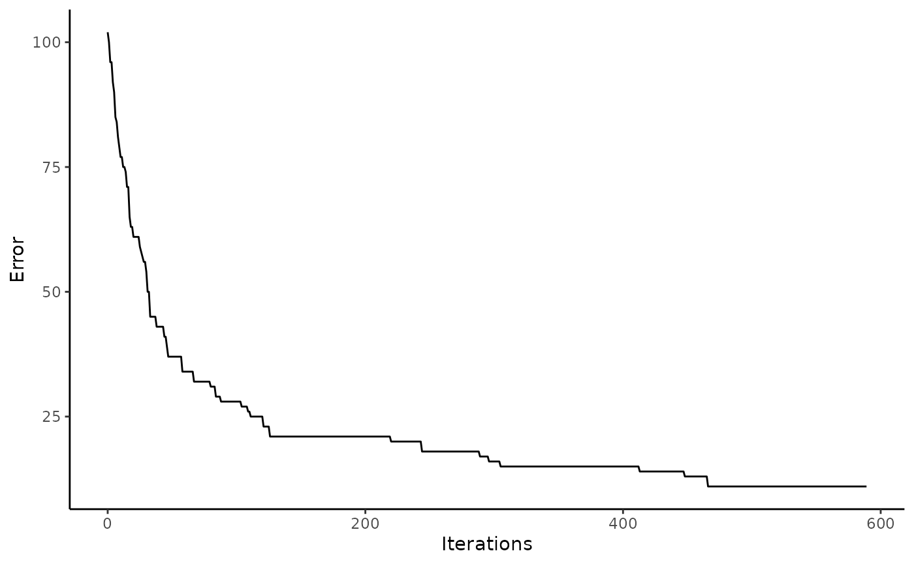

Minimal example
C.E. Simpkins, S. Hanss, M. Hesselbarth, M.C. Spangenberg, J. Salecker and K. Wiegand
2021-12-09
Source:vignettes/minimal_example.Rmd
minimal_example.RmdGetting started
Installation
Install the release version from CRAN:
install.packages("spectre")To install the developmental version of spectre, use:
install.packages("devtools")
devtools::install_github("r-spatialecology/spectre")Example
For this example, we created a random species composition (15 sites, gamma diversity = 20) and calculated \(\alpha\)-diversity and Bray-Curtis dissimilarity to be used as input for the spectre algorithm (please see R/generate_minimal_example_data.R for details).
# load "observed" alpha-, beta- and gamma-diversity values of the random species composition
alpha_list <- minimal_example_data$alpha_list # richness
beta_list <- minimal_example_data$beta_list # Bray-Curtis dissimilarity
total_gamma <- dim(minimal_example_data$species_list)[1] # 20 speciesSolve species composition using spectre
Running the optimization is straightforward in spectre and only includes one function call. However, first we need to generate to commonness matrix from the gdm predictions to generate the object matrix. Then, we simply run the optimization using the alpha list, the \(gamma\)-diversity, the objective matrix (or target), and finally the number of maximum iterations.
library("spectre")
objective_matrix <- spectre::generate_commonness_matrix_from_gdm(gdm_predictions = beta_list,
alpha_list = alpha_list)
# Solve composition
res <- spectre::run_optimization_min_conf(alpha_list = alpha_list,
total_gamma = total_gamma,
target = objective_matrix,
max_iterations = 1000, # n iterations
seed = 123) # use a random seed for reproducibility
#>
#> > Optimization finished with lowest absolute error = 11 (highest absolute error was: 102 improved by: 91)Result evaluation
spectre allows to easily calculate some error measures, namely the mean absolute commonness error (\(MAE_c\)) and the relative commonness error [%] (RCE). The error is calculated between the solved species composition and the objective matrix.
error_c <- spectre::calc_commonness_error(x = res, objective_matrix = objective_matrix)The objective matrix had a mean commonness of 1.75. The mean absolute error between the objective matrix and the solved solution matrix was 0.1. The solution matrix had an relative commonness error (RCE) of 6 %.
There are also two functions to visualize the optimization. First you can plot the error of the solution matrix over time. Second, you can plot the commonness error between the solution matrix and the objective matrix.
# With an increasing number of iterations, the solution matrix improved
spectre::plot_error(x = res)
# Plot commonness error between objective matrix and solution matrix
spectre::plot_commonness(x = res, target = objective_matrix)